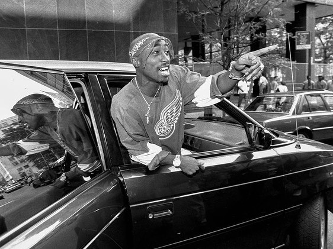
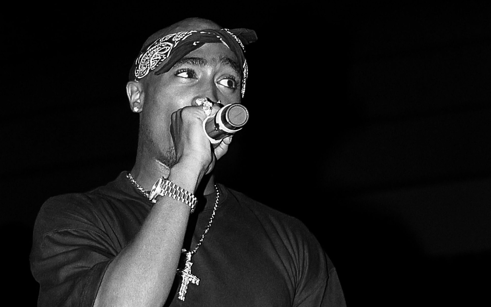

Tupac Amaru Shakur
(Born June 16, 1971 - Died September 13, 1996) He was an American hip hop and rapper. In addition to music, he has been an actor and social activist. He is also referred to as a symbol of social equality and human rights. His songs are mainly about various topics such as living in violence and poverty, hardships and living conditions in slums, racism against blacks, confronting the collusion of the rich and reasoned expression of conspiracy theories, social problems and conflicts and artistic competition with other singers. As well as being anti-Illuminati or so-called Tupac Kiluminati.

Death
2pak was shot five times in a black Cadillac in Las Vegas, Nevada, on September 7, 1996, after watching a boxing match between Mike Tyson and Bruce Seldon. He died at 4:03 a.m. on September 13 when he was just 25 years old. The people who shot him are thought to have been East Coast gangsters or AFB agents, or even people who had been at loggerheads in the past, in which case many people had the necessary motivation. Despite the relatively long time since the incident, the Las Vegas police have officially kept the case open.